Penalty
Twelve yards, one striker, your nerve. Watch the run-up and the lean of his shoulders, then pick a side.
Which way will he go?
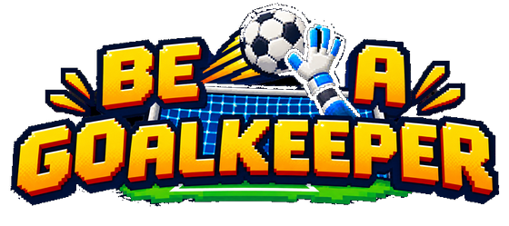
You are only the goalkeeper. Every save is yours to make.
Every football game lets you score. This one puts you where the match is decided — and leaves you there alone. Read the striker, commit to a side, and live with the call.
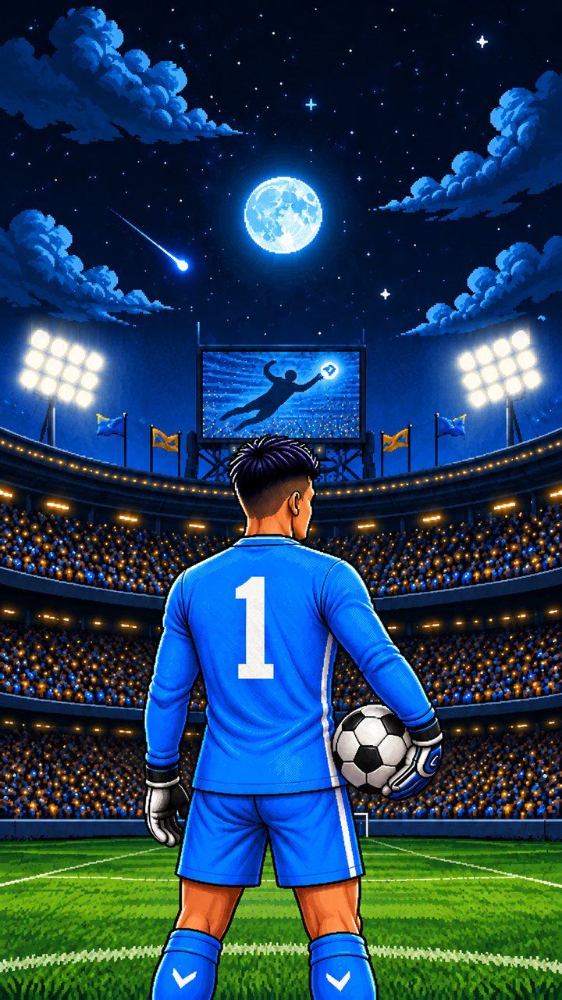
The broadcast
The match is told, not just played. The commentary follows what really happened — your saves, your defenders, the opposition captain, the yellow card you could feel coming. It names your team-mates. It remembers the score. When a chance falls to the striker, the broadcast hands the moment to you.
It is the reason a match feels like a broadcast instead of a menu.
Five ways to be beaten
Every match brings four or more big chances, each one played as its own short duel. Win it and the broadcast roars. Lose it and the score changes.
Twelve yards, one striker, your nerve. Watch the run-up and the lean of his shoulders, then pick a side.
Which way will he go?
Set your wall, then read the curl over it. Move too early and the far corner is open.
Over the wall or around it?
A strike from distance through a crowded box. Find the line of the ball the moment it leaves the boot.
Where is the line — right now?
Chaos in the six-yard box. Choose your stance, then decide: come for the ball or trust your defenders.
Can I claim it?
A striker running at you with the whole goal behind you. Rush the angle, hold the line, or spread low.
What does he mean to do?
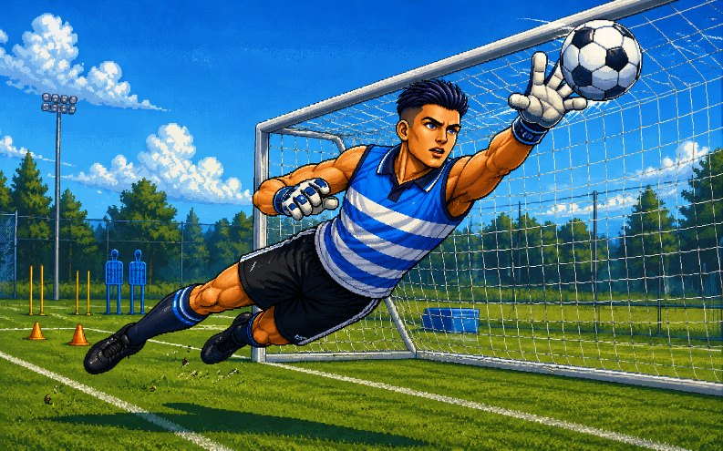
The ball is too fast to react to. The striker is not. His standing foot, his hips, the half-second before he strikes — the tell is there, and it changes every time. When you need more, Keeper's Instinct shows you the lean a moment early.
A career, not a high score
Start with a mother who thinks gloves do not pay school fees and a poster of Paffon, the keeper who made you want this. Every match moves the story, and the story is the reason the next match matters.
A trial, a coach who does not hand out praise, and a place in goal you have to earn.
Bigger clubs, a rival keeper who is better than you, and your first reporter.
Being written. Finish chapter 2 and the weekly Rank ladder opens while you wait.
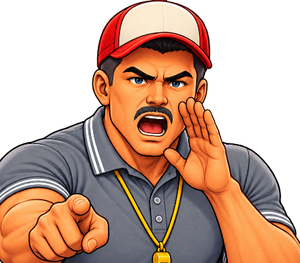
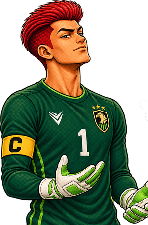
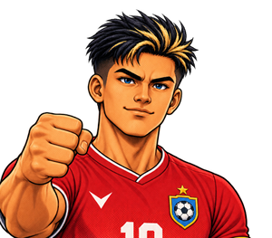
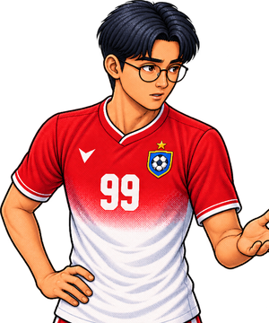
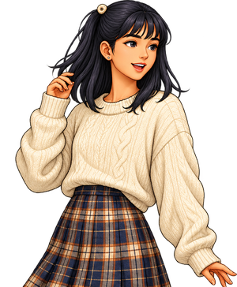
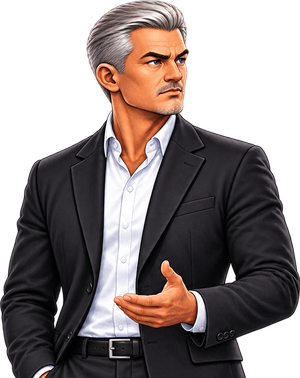
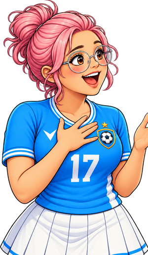
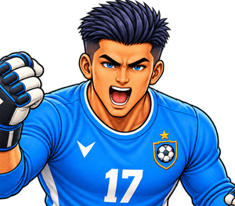
Build the team around you
A defender who blocks shots before they reach you. A winger who turns your saves into counter-attacks. Four players start with you; four more are waiting in the transfer market.
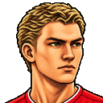
Jaric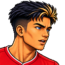
Minanda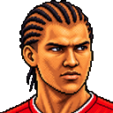
Castolo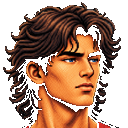
Maldin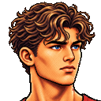
Vasten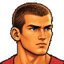
ZadineGold border: signed in the transfer market with gems you earn by playing. Each one arrives with a scene of their own.
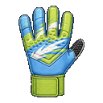
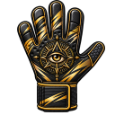
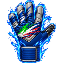
Nine pairs, bought with coins from your matches. The rarest carry a signature move that flares up when you use Keeper's Instinct.
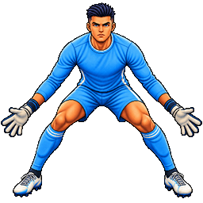
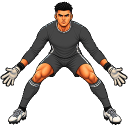
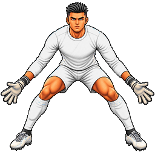
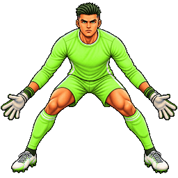
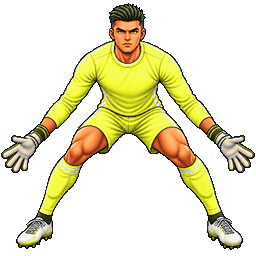
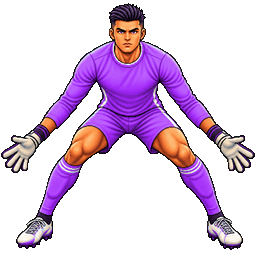
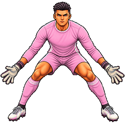
Looks only — a kit never changes a stat. Whatever you wear shows up in every match. Add daily rewards, missions and six avatar frames to chase.
After chapter 2
Penalty shootouts against club sides, from #100 to the top. You take your team's kicks and you save theirs. Every week the season closes, the rewards are paid, and the ladder starts again.
Rank opponents are computer-controlled clubs. There is no online play.
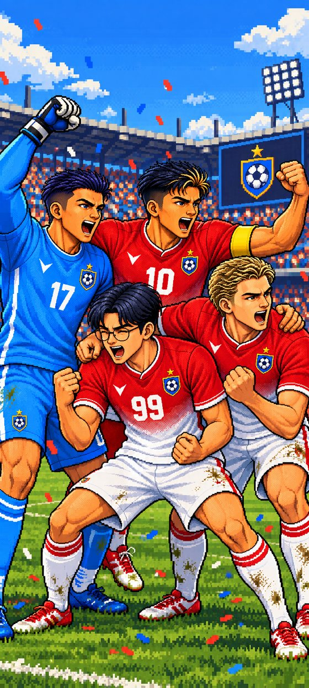
From the current build
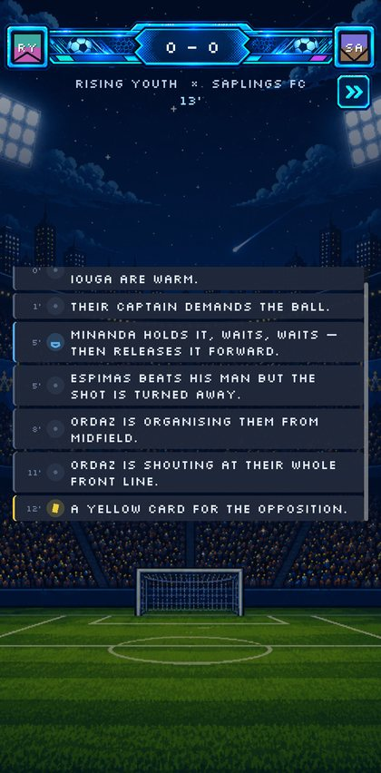
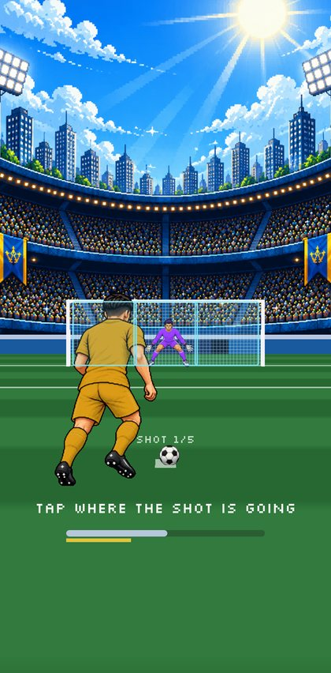
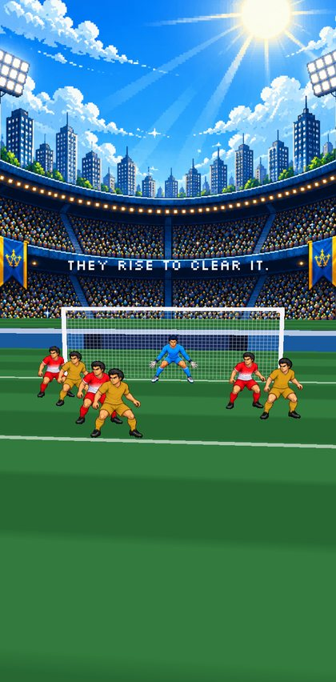
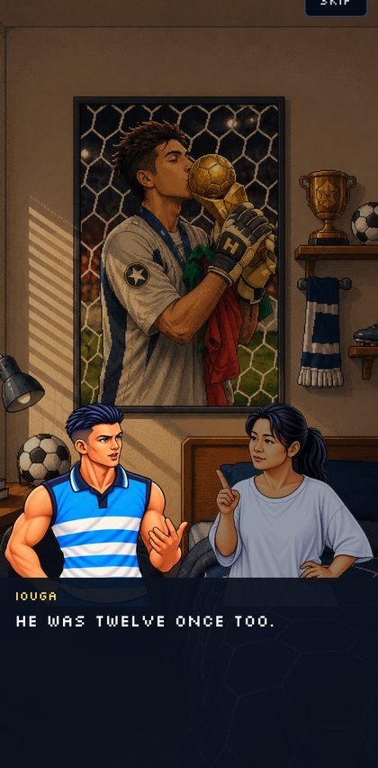
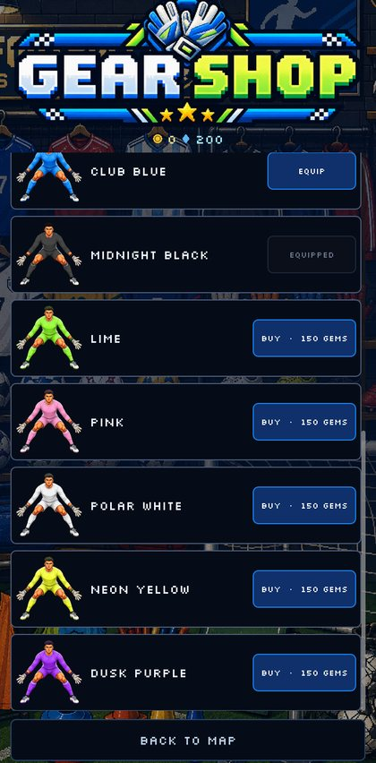
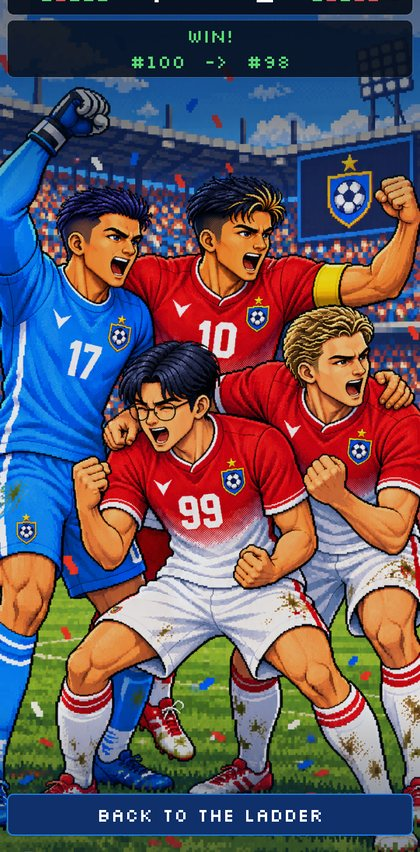
Closed test on Google Play
We are opening a closed test before the public release. Testers play the real build on their own Android phone and tell us what felt wrong, what felt good, and whether they wanted one more match.
porogapitstudio@gmail.com
Write the email
FAQ
Nothing. The game is free to play and contains ads. There are no in-app purchases: coins, gems, gloves, kits and team-mates are all earned by playing.
Android phones. It starts as a closed test on Google Play, followed by a public release.
No. The weekly Rank ladder is played against computer-controlled club sides. Your career is yours alone.
Your career is saved on your phone. Ads need a connection to load.
English and Bahasa Indonesia, switchable any time in Settings.
No account, no sign-up. Ads are served by Google AdMob, which uses a device identifier; where the law requires it, you can review your ad consent in Settings. The full details are in our privacy policy.